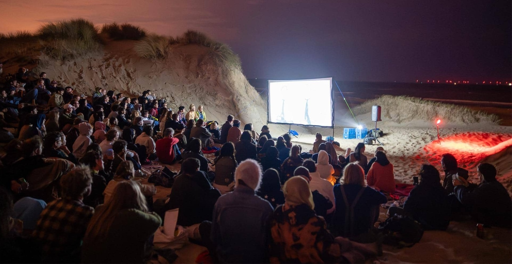
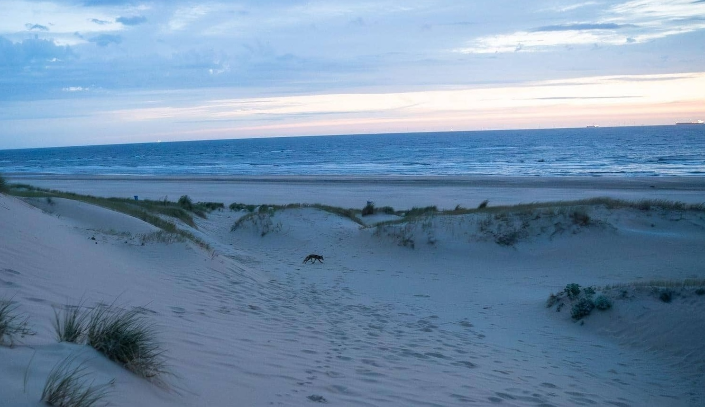
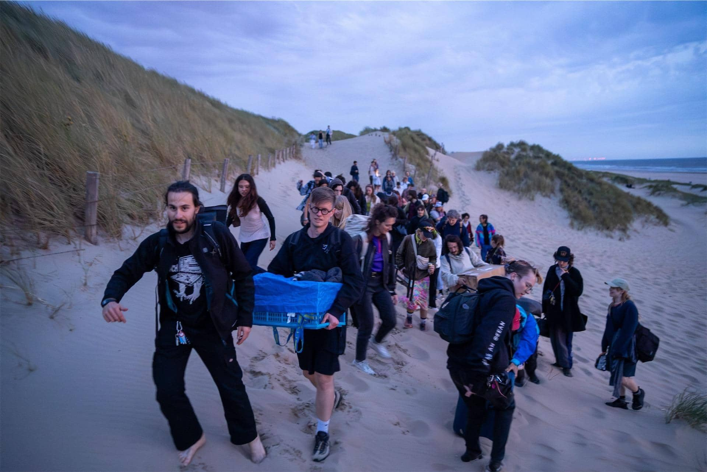
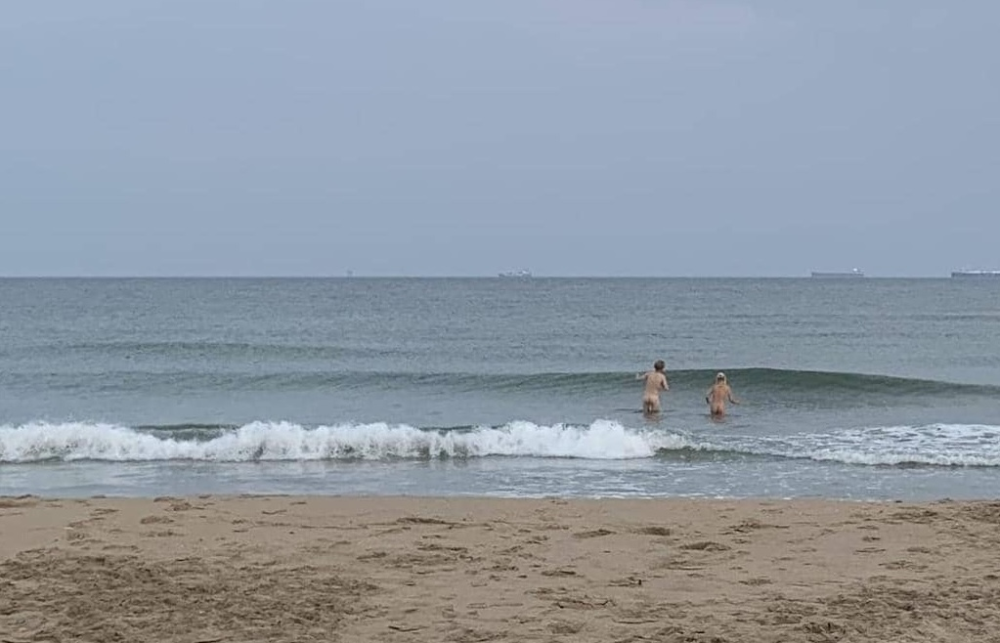

FILMS
PHOTOS
ABOUT
THE WORST FILM FESTIVAL IN THE WORLD
Sand Nudes is an annual bad film festival held in The Hague. Across seven editions, we've produced 83 films. Each team receives three prompts and one genre as their creative foundation, every team's assignment is different. Over a span of two weeks, the teams produce their films, which are later screened on a DIY outdoor setup in the dunes. Following the audience vote, the evening peaks with an award ceremony that turns into an after-party featuring live music performances and DJs.
Long story long
SAND NUDES EDITORIAL
How did it all start? Sand Nudes could be traced back to 2014, when I was living in Los Angeles. I was taking Filmmaking classes in my high school, but didn't really participate in making movies, kinda just sat there and occasionally made BMX videos. I remember I once made one in which I used profane rap music. Like very explicit; back then I guess my English wasn't so good and I didn't really know what it was. I played it in the class and the teacher got super upset.
I did these videos because I didn't want to make serious drama films like everyone else. However, there was one other guy, Noah Kentis. He was a skater, super nonchalant. I remember one day towards the end of the school year, I heard from classmates that he, alongside his friends, was organising a "Some Shit Film festival". We made a silly little movie called The Perfect Occasion. The movies were screened in a little cinema and toilet paper was awarded to the winners.
About four years later in the Netherlands, after many moving image classes, this suddenly came over me and I wanted to do it myself. I talked to a couple of people about it, most notably Carmen, Kin and Ivan. We struggled with the venue a lot, and after talking to the Filmhuis, it all fell through; they gave us a big price and hostile treatment. The Hague municipality didn't want us in public spaces without security, toilets and medical staff. None of which we could afford. Somehow Kin ended up scouting the initial location, Carmen came up with the best name, and Ivan and I put together the logistics. Home speakers, an inverter, a car battery and a projector borrowed from a KABK professor. Sand Nudes 2018 happened without knowing anything at all, we just went for it. There were about thirty people who showed up. Movies were all over the place, but it was the start of something amazing.

Perhaps a little interlude about the movies here. After all, these are the very core of this festival. There is a registration online, that opens about a month before the event. At first this was done through messages, but then I implemented simple google forms, to collect the e-mails, one for the team. Two weeks before the event, the teams receive the assignments. Each team has completely unique set of one genre and three prompts. These are the driving force behind the creativity. I always believed that it's much easier to be creative within limitations, than without. This assignment is received either in form of a still image or a little animation in 16:9 aspect ratio. You can find them all at the beginning of each movie. These prompts have to be very carefully constructed. I mean it would be entirely possible to make a film festival like this, but with badly curated prompts it would all fall apart and become very distasteful very quickly.
The technical aspect of submitting the movies was also done through google forms, which was published on the website. When we receive the movies I usually just skip through them to check if they work (I want to see them for the first time in the dunes too) and then render them together into one consecutive timeline, with the intermissions and other time slots built in. This was perhaps the biggest single streamlining of the Sand Nudes experience, only introduced at like edition 5. Production value skyrocketed that year.
At Sand Nudes all the screened movies are specifically made for this festival, and all the submissions are screened without any selection process. The most we ever got was for the 2025 edition, 16 movies.
As the editions went by, each year I had to make the trophy awards. You can see how they developed over the years. Most of them I put together somehow with 3D printing; one of them was made from clay by Shani. This was always so much fun, and I was looking forward to awarding the audience award. I guess you have to make it fun for yourself too, find some pleasure amongst all the stress that comes with planning and taking the responsibility of holding an illegal outdoor event in a country with weather like the Netherlands. At least try your best to control the elements you can control. The rest is a roulette.

From the second edition I only remember small moments. There was like an old-school Lithuanian rapper in town for some reason. He used to be the biggest in Lithuania at some point; now he does gallery rap, where he kinda recites very long English words in a thick Eastern-European accent. This is simply a gig we had to have at Sand Nudes. Laimonas contacted him, this dude took a taxi to the dunes, walked for an hour and then performed in exchange for some magic mushrooms.
We had multiple car batteries, but they kept running out of power. And after the movies screened we tried to have a party with them too. I only remember seeing Laimonas from a distance, trying to touch the cables to the poles of the car batteries and sparks flying around. But you know how it is with batteries, it's like hitting a dead vape after it has been sitting around for a while. You might just get a little more juice.
A story from three friends of mine who got lost in the dunes: They were looking for the location for an hour, before they saw three wild horses on top of the dune. They followed the horses over the horizon, until they led them to Sand Nudes.
The next couple of editions were progressively better, except a couple of fiascos when we forgot a jack-to-jack cable, and Ruben had to go get it all the way in the center of the Hague. While over a hundred people were waiting at the beach... One way bike trip is about 40 minutes...
Movies kept getting better (or worse?) and more people kept coming. Vibes were always very good. Sand Nudes 5 around 1am. Movies were finished and we were just starting the party, when one of my friends comes to me, telling me there are lights in the distance, over the dunes. Those lights kept multiplying. As they got closer we turned off the music, lights and stayed quiet. They found us anyway, it was about 12 policemen. They kicked us out without too much hassle and just a little bit of aggression. On the way to our bikes, some drunkard screamed, "Well we can't be in the dunes, but we can be at the beach!" We all collectively turned at the cop escorting the crowd, he shrugged his shoulders and said: "Yeah that's fine." (in dutch) I still think that turned out to be the best Sand Nudes afterparty, from which the generator never recovered. This was supposed to be the last Sand Nudes ever, I wanted to keep the festival ephemeral, as Nelly said: "All the good things come to an end".
There was too much excitement, everyone was ready and in demand for more; edition 6 and 7 happened at a new location. That was less in grips with the law. At the beach basically. I really liked this new location, because behind the screen you could see the horizon at the sea, with the windmills in the distance, which would flash their red lights in random order.
These two editions happened so smoothly; so much has been troubleshot and problem-solved over the years. More people helping, and technology has also developed so much over those years. Suddenly we could run the whole film festival off one lithium-ion battery, with much power to spare, I thought it was beautiful.


Some of my favorite vistas were always the amazing people that would carry the supplies from the bike parking, through the sand, through the dunes, to the festival location. At some points these were biblical sights, at some points it felt like Sisyphus pushing a 40KG generator up a sand dune with no end. But without these brave volunteers none of it would be possible. Sand Nudes was never intended to be as nude as it ended up being, sometimes you would be dancing to crazy remixes of Madonna, just to look past the DJ at the sea, seeing 10 people running naked into the sea, those early mornings had truly magical notes to them.
It has never been counted exactly, but I think in 2018 we started with about 30 people, and Sand Nudes 2025 has ended with about 230 people.
Over the years we have improvised so many catering options, but it has always been completely vegan. I think it's like airports, they always have recycling bins. If you are going to host an event you can actually make a bigger impact, so it's something to consider!
I just want to say, if you want to make your own film festival, please do. Get inspired by Sand Nudes, much like I got inspired by Some Shit Film festival. There is already a spin-off happening in Germany by our dear friends that would travel to the dunes every year! It's called QWERT film festival. I just hope you don't monetize it, you don't try to scale it. Its value lies exactly outside of these capitalistic borders. Sand Nudes has always been completely free, and open to everyone.
I am forever grateful to all the people that made it possible, you can see them listed in credits. And all the people who poured their hearts into making 83 beautiful films. <3
If you have any questions please feel free to contact. Be resourceful, find me!
SAND NUDES FOREVER,
yours Adam